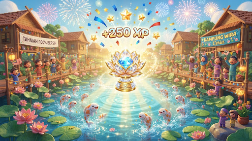

park
TAMAN HARMONI • AMALAN IHSAN & KEBERSIHAN
menu_book
Pendidikan Islam & Moral Thn 1
spa
✨ MISI IHSAN TAHAP 1 LENGKAP!
Tahniah! Kolam Teratai 100% Jernih Bersih!
Semua daun kering telah diselamatkan dan air kolam berkilau seperti cermin kristal. Ikan-ikan koi berenang riang!
💧 Status
100% Jernih
🐟 Riang
5/5 Koi
🏆 Anugerah
Kristal Dibuka

arrow_back_ios_new
100% Bersih Sempurna!
stars
+250 XP Kejayaan
military_tech
🏆 Trofi Kolam Kristal Berjaya Dimenangi!
face_4
verified
Ustazah Melur & Tok Ketua
Penghargaan Ihsan
“Alhamdulillah dan tahniah Wira Adam! Berkat amalan ihsan dan kerajinanmu menyayangi alam, Kolam Teratai Kampung Wira kini berseri indah. Terimalah Trofi Kolam Kristal ini sebagai lambang kemuliaan hatimu!”
trophy
Ganjaran Khas Utama
TROFI KOLAM KRISTAL (IHSAN THN 1)
Trofi agung berbentuk kelopak teratai kristal bersalut emas nusantara. Dipamerkan di Anjung Gemilang Kampung Wira!
stars
+250 XP
Pahala Kebersihan Kolam
monetization_on
+300 Syiling
Bahan Bina Desa Indah
auto_stories
Kad Jurnal
Flora & Fauna Terbuka!
foundation
Tapak Plot 5
Sedia Dibina di Desa!